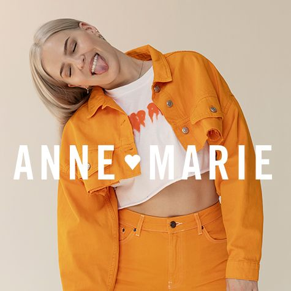

Social + developer I enjoy figuring out hard problems about social issues with other people. What I believe is that code has power that makes world better. I'd like to be a part of this influence as a web-developer. That is one of reasons I've been learning web developing and keep interest about coding.
My Favorite Things is


I love traveling around world.
That is one of big reason that I've got into programming
because I was looking for a job that I can work independently
and keep traveling and working both in my life.
Also I'm interested in human's mental health and psychology.
One of my goal as a web-developer is making a service about counselling to be able to make
the more people take care their own mental health and happiness.
Imperfectionist I always persuit imperfection in my life. Because I don't want to be obessed with perfection in everything I'm doing. Instead of this, I prefer just doing some small things now even it looks not a big thing at the moment. I believe that small accomplishments will make me so much different in future.